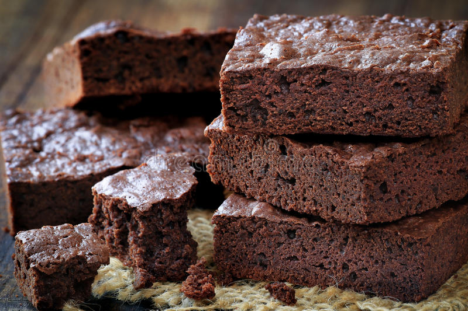

Brownies Recipe

Description
The BEST brownie recipe! With crispy edges, fudgy middles, and rich chocolate flavor
Ingredients
- 2 eggs
- A bit of water
- 1 cup of powdered sugar
- 3 cup of unsweetened cocoa powder
- 1 cup of melted butter
- 1/2 teaspoon vanilla extract
Steps
- Mix together the dry and wet ingredients in two separate bowls.
- Combine the wet and dry ingredients.
- Pour the batter into an 8×8 inch baking pan lined with parchment paper.
- Transfer the pan to a 325-degree oven and bake for 40 to 45 minutes